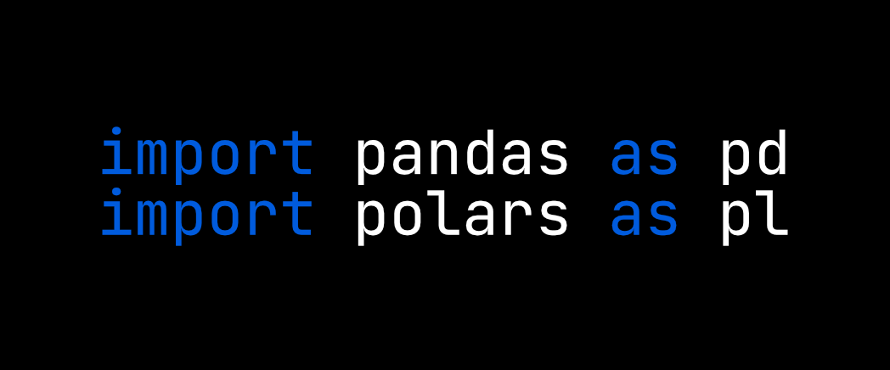
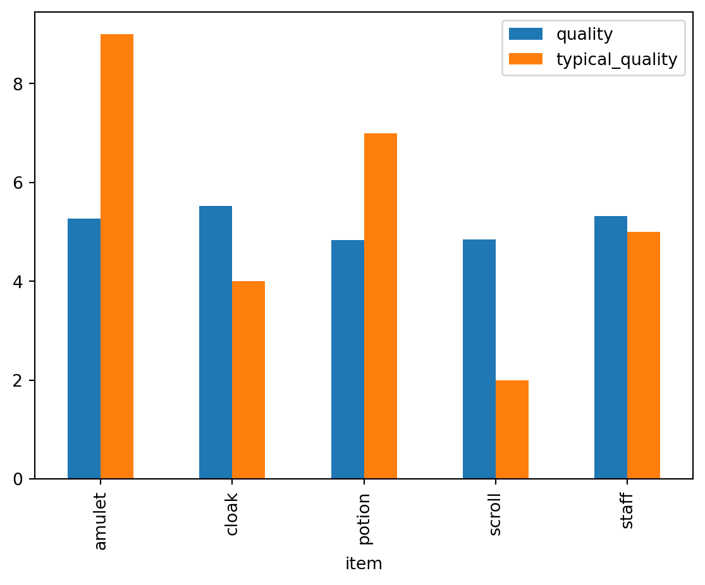

import pandas as pd
import numpy as np
import polars as pl
from datetime import date, timedelta, datetimeThis guide will help you start learning polars by showcasing analogous code snippets from pandas.

In recent years, polars1 is becoming increasingly popular in the data science community (more than 33k stars on GitHub as of May 20252). According to the author of polars, Ritchie Vink, the package’s API is “consistent and strict,” and its focus is on maximizing single machine performance3 which perhaps explains some of the library’s appeal. From my experience, polars has been a major time saver, especially in data-intensive computations. However, I think that it is perfectly reasonable to prefer pandas for some tasks (like quick data visualization), and I am glad that this competition is pushing the field forward.
In this post, I wrote down some of the most common operations in pandas and their equivalents in polars to help you get acquainted with the package (and to help myself remember). Please, note that this guide / cheat sheet may not be exhaustive and in some cases, there might be additional ways to achieve the same goal. Feel free to let me know in the comments.
This is a runnable Quarto document, so first, let’s load the packages.
Load data
We’ll be working with my Wizard Shop Dataset4 which was specifically crafted for introductory data analysis. It consists of three tables:
wizard_shop_inventory.csv: A list of products with prices, item quality, and other attributes.magical_items_info.csv: A small table with typical price, quality, and where the item is typically found.items_prices_timeline.csv: Average daily prices of each product category.
Let’s load the data.
As we can see, the syntax is the same in both packages except for parsing dates.
data_url = "https://raw.githubusercontent.com/rnd195/wizard-shop-dataset/refs/heads/main/data/"
df_pd = pd.read_csv(data_url + "wizard_shop_inventory.csv")
info_pd = pd.read_csv(data_url + "magical_items_info.csv")
prices_pd = pd.read_csv(
data_url + "items_prices_timeline.csv",
parse_dates=["date"]
)As we can see, the syntax is the same in both packages except for parsing dates.
data_url = "https://raw.githubusercontent.com/rnd195/wizard-shop-dataset/refs/heads/main/data/"
df_pl = pl.read_csv(data_url + "wizard_shop_inventory.csv")
info_pl = pl.read_csv(data_url + "magical_items_info.csv")
prices_pl = pl.read_csv(
data_url + "items_prices_timeline.csv",
try_parse_dates=True
)Take a peek
Sometimes, we want to take a quick look at the data. The methods .sample(), .head(), and .tail() all work in both packages.
The df DataFrame contains all the products the wizard shopkeeper sells—items like potions, amulets, or cloaks.
df_pd.sample(3)| id | item | price | magical_power | quality | in_stock | found_in | |
|---|---|---|---|---|---|---|---|
| 426 | 427 | cloak | 630.5 | 298.183 | 0 | True | dungeon |
| 299 | 300 | staff | 2124.0 | 772.533 | 7 | True | NaN |
| 42 | 43 | amulet | 1076.0 | 465.399 | 9 | True | dungeon |
The info table contains information about the typical attributes of these items.
info_pd.head(3)| item | typical_price | typical_quality | typically_found_in | |
|---|---|---|---|---|
| 0 | amulet | 1000 | 9 | dungeon |
| 1 | potion | 50 | 7 | village |
| 2 | cloak | 500 | 4 | city |
The prices DataFrame contains the daily average price of each item in the fantasy world’s economy in the magical year of 2025.
prices_pd.tail(3)| date | amulet | potion | cloak | staff | scroll | |
|---|---|---|---|---|---|---|
| 362 | 2025-12-29 | 742.21 | 44.70 | 648.72 | 971.90 | 731.69 |
| 363 | 2025-12-30 | 802.06 | 48.99 | 446.10 | 1711.04 | 728.60 |
| 364 | 2025-12-31 | 957.94 | 64.08 | 503.88 | 2899.72 | 829.59 |
The df DataFrame contains all the products the wizard shopkeeper sells—items like potions, amulets, or cloaks.
df_pl.sample(3)
shape: (3, 7)
| id | item | price | magical_power | quality | in_stock | found_in |
|---|---|---|---|---|---|---|
| i64 | str | f64 | f64 | i64 | bool | str |
| 376 | "scroll" | 1039.5 | 424.913 | 4 | true | "dungeon" |
| 90 | "potion" | 64.35 | 93.7195 | 3 | true | "dungeon" |
| 125 | "potion" | 54.05 | 108.9175 | 8 | true | "dungeon" |
The info table contains information about the typical attributes of these items.
info_pl.head(3)
shape: (3, 4)
| item | typical_price | typical_quality | typically_found_in |
|---|---|---|---|
| str | i64 | i64 | str |
| "amulet" | 1000 | 9 | "dungeon" |
| "potion" | 50 | 7 | "village" |
| "cloak" | 500 | 4 | "city" |
The prices DataFrame contains the daily average price of each item in the fantasy world’s economy in the magical year of 2025.
prices_pl.tail(3)
shape: (3, 6)
| date | amulet | potion | cloak | staff | scroll |
|---|---|---|---|---|---|
| date | f64 | f64 | f64 | f64 | f64 |
| 2025-12-29 | 742.21 | 44.7 | 648.72 | 971.9 | 731.69 |
| 2025-12-30 | 802.06 | 48.99 | 446.1 | 1711.04 | 728.6 |
| 2025-12-31 | 957.94 | 64.08 | 503.88 | 2899.72 | 829.59 |
Subset a DataFrame
Columns
Select a column by name
There are several ways to select a single column in both pandas and polars. Note that some of the calls return a Series while others return a DataFrame.
df_pd["price"] # -> returns Series of shape (500,)
df_pd[["price"]] # -> returns DataFrame of shape (500, 1)
df_pd.price # -> returns Series of shape (500,)
df_pd.loc[:, "price"] # -> returns Series of shape (500,)df_pl["price"] # -> returns Series of shape (500,)
df_pl[:, "price"] # -> returns Series of shape (500,)
df_pl.select("price") # -> returns DataFrame of shape (500, 1)
df_pl.select(pl.col("price")) # -> returns DataFrame of shape (500, 1)Select multiple columns by name
Below are several alternatives for selecting columns.
df_pd[["item", "price"]]
df_pd.loc[:, ["item", "price"]]df_pl[["item", "price"]]
df_pl[:, ["item", "price"]]
df_pl["item", "price"]
df_pl.select(["item", "price"])
df_pl.select(pl.col("item", "price"))Slice columns by range
Instead of selecting columns by name, we can write their positions in the DataFrame.
df_pd.iloc[:, 5:7]df_pl[:, 5:7]Slice columns by name
It’s also possible to select a range of columns by name. The resulting DataFrame will contain the first and the last selected column as well as any columns in-between.
df_pd.loc[:, "in_stock":"found_in"]df_pl[:, "in_stock":"found_in"]Filter columns using Bools
We can pass a list of True/False values to select specific columns. The length of this list needs to be the same as the number of columns in the DataFrame. For instance, df_pd/df_pl contains 7 columns. Thus, one possible list of True/False values may look like this: [True, False, True, False, True, True, True].
# Return all columns containing the substring "price"
df_pd.loc[:, ["price" in col for col in df_pd.columns]]# Return all columns containing the substring "price"
df_pl[:, ["price" in col for col in df_pl.columns]]Rows
Select row by index label
In case the index is, for example, datetime or str, it is possible to select rows by the index label. However, this is not applicable in polars since polars treats the index differently than pandas.
prices_pd = prices_pd.set_index("date")
prices_pd.loc["2025-01-05"]amulet 996.24
potion 49.65
cloak 497.42
staff 2643.03
scroll 1096.03
Name: 2025-01-05 00:00:00, dtype: float64# Not applicable in polars
# Below is a call that outputs a similar result
prices_pl.filter(pl.col("date") == date(2025, 1, 5))
shape: (1, 6)
| date | amulet | potion | cloak | staff | scroll |
|---|---|---|---|---|---|
| date | f64 | f64 | f64 | f64 | f64 |
| 2025-01-05 | 996.24 | 49.65 | 497.42 | 2643.03 | 1096.03 |
Select a single row by integer position
Both pandas and polars support selecting a single row using its integer position.
df_pd.iloc[4] # -> returns a Series
df_pd[4:5] # -> returns a DataFramedf_pl[4]
df_pl[4:5]
df_pl[4, :] # -> all three of these return a DataFrameSlice rows by integer range
Likewise, both pandas and polars support selecting rows using a range of integers.
df_pd.iloc[0:5]
df_pd[0:5]df_pl[0:5]
df_pl[0:5, :]Filter rows using Bools
We can pass a Series (or a similar object) containing True/False values to subset the DataFrame.
# Get products with price over 1000
df_pd[df_pd["price"] > 1000]# Get products with price over 1000
df_pl.filter(df_pl["price"] > 1000)
df_pl.filter(pl.col("price") > 1000)Creating new columns
New empty column
Sometimes, it might make sense to create a new column in a DataFrame and fill it with NA values. I think of it as “reserving” the column for values that will be put into the column later. There are several ways to achieve this in both packages.
Missing values in pandas: depends on the datatype. Consider using None or np.nan. Note that pd.NA is still experimental.
# Is any item in the wizard's shop cursed? We don't know => NA
df_pd["is_cursed"] = np.nan
df_pd = df_pd.assign(is_cursed=np.nan)
df_pd = df_pd.assign(**{"is_cursed": np.nan})
df_pd.loc[:, "is_cursed"] = np.nanMissing values in polars: None, represented as null.
# Is any item in the wizard's shop cursed? We don't know => NA
df_pl = df_pl.with_columns(is_cursed=None)
df_pl = df_pl.with_columns(is_cursed=pl.lit(None))
df_pl = df_pl.with_columns(pl.lit(None).alias("is_cursed"))Transform an existing column
Apply any function to an existing column in a DataFrame and write it as a new column.
Some options for transforming columns in pandas: .transform(), .apply(), calling a numpy function on the Series…
# Take the logarithm of the price column
df_pd["log_price"] = df_pd["price"].transform("log")
df_pd["log_price"] = df_pd["price"].apply(np.log)
df_pd["log_price"] = np.log(df_pd["price"])Transforming columns in polars: use the .with_columns(...) method.
# Take the logarithm of the price column
df_pl = df_pl.with_columns(pl.col("price").log().alias("log_price"))
df_pl = df_pl.with_columns(log_price=pl.col("price").log())
df_pl = df_pl.with_columns(df_pl["price"].log().alias("log_price"))Boolean filters
Use set operations to filter the DataFrame based on predefined conditions.
# AND operator
df_pd[(df_pd["price"] > 500) & (df_pd["price"] < 2000)]
# OR operator
df_pd[(df_pd["price"] >= 500) | (df_pd["item"] != "scroll")]
# Inverse
df_pd[~df_pd["in_stock"]]
# True if a value matches any of the specified values, else False
df_pd[df_pd["item"].isin(["staff", "potion"])]
# Is not NA... there's also .dropna()
df_pd[~df_pd["found_in"].isna()]# AND operator
df_pl.filter((pl.col("price") > 500) & (pl.col("price") < 2000))
# OR operator
df_pl.filter((pl.col("price") >= 500) | (pl.col("item") != "scroll"))
# Inverse
df_pl.filter(~pl.col("in_stock"))
# True if a value matches any of the specified values, else False
df_pl.filter(pl.col("item").is_in(["staff", "potion"]))
# Is not NA... consider also .is_not_null()
df_pl.filter(~pl.col("found_in").is_null())Replacing values in row slices
Let me explain this with an example relating to the dataset at hand. We are looking at the inventory of a particular wizard shop. In this magical universe, let’s suppose that we learn that every item with magical_power over 900 is cursed. There might be other reasons why an item is cursed, but these reasons are unknown to us.
What we can do is to filter the DataFrame to display only items with magical_power over 900 and using this filter, we write True to the is_cursed column for every row satisfying this condition.
Label all items with magical_power over 900 as cursed.
# A column full of NAs should be cast as "object" first
df_pd["is_cursed"] = df_pd["is_cursed"].astype("object")
df_pd.loc[df_pd["magical_power"] > 900, "is_cursed"] = True
df_pd.head(3)| id | item | price | magical_power | quality | in_stock | found_in | is_cursed | log_price | |
|---|---|---|---|---|---|---|---|---|---|
| 0 | 1 | amulet | 915.0 | 402.961 | 9 | True | dungeon | NaN | 6.818924 |
| 1 | 2 | staff | 2550.0 | 933.978 | 2 | False | dungeon | True | 7.843849 |
| 2 | 3 | potion | 62.2 | 129.897 | 5 | True | city | NaN | 4.130355 |
Label all items with magical_power over 900 as cursed.
df_pl = df_pl.with_columns(
pl.when(pl.col("magical_power") > 900)
.then(pl.lit(True))
.otherwise(pl.col("is_cursed"))
.alias("is_cursed")
)
df_pl.head(3)
shape: (3, 9)
| id | item | price | magical_power | quality | in_stock | found_in | is_cursed | log_price |
|---|---|---|---|---|---|---|---|---|
| i64 | str | f64 | f64 | i64 | bool | str | bool | f64 |
| 1 | "amulet" | 915.0 | 402.961 | 9 | true | "dungeon" | null | 6.818924 |
| 2 | "staff" | 2550.0 | 933.978 | 2 | false | "dungeon" | true | 7.843849 |
| 3 | "potion" | 62.2 | 129.897 | 5 | true | "city" | null | 4.130355 |
Create a copy
df_pd_temp = df_pd.copy()In polars, copying or cloning (.clone() method) may not be necessary.5
df_pl_temp = df_plJoining data
Inner join
The info_pd / info_pl table contains typical information (e.g., typical price) about each item in the fantasy universe this dataset was sourced from. Naturally, the shopkeeper has no incentive to provide this information in the original data. However, we can add the information from the info table to the main table ourselves.
In our case, we can use an “inner join” and match the items using the item column as long as
both tables contain this column,
and the column itself serves the same purpose in both tables.
If there would be an additional item in the shopkeeper’s inventory for which we wouldn’t have data in the info table, we may consider using an “outer join.” For a review of joins consider reading the following Wiki article.
info_pd| item | typical_price | typical_quality | typically_found_in | |
|---|---|---|---|---|
| 0 | amulet | 1000 | 9 | dungeon |
| 1 | potion | 50 | 7 | village |
| 2 | cloak | 500 | 4 | city |
| 3 | staff | 2000 | 5 | dungeon |
| 4 | scroll | 900 | 2 | dungeon |
df_full_pd = pd.merge(left=df_pd, right=info_pd, how="inner", on="item")
df_full_pd.head(3)| id | item | price | magical_power | quality | in_stock | found_in | is_cursed | log_price | typical_price | typical_quality | typically_found_in | |
|---|---|---|---|---|---|---|---|---|---|---|---|---|
| 0 | 1 | amulet | 915.0 | 402.961 | 9 | True | dungeon | NaN | 6.818924 | 1000 | 9 | dungeon |
| 1 | 2 | staff | 2550.0 | 933.978 | 2 | False | dungeon | True | 7.843849 | 2000 | 5 | dungeon |
| 2 | 3 | potion | 62.2 | 129.897 | 5 | True | city | NaN | 4.130355 | 50 | 7 | village |
info_pl
shape: (5, 4)
| item | typical_price | typical_quality | typically_found_in |
|---|---|---|---|
| str | i64 | i64 | str |
| "amulet" | 1000 | 9 | "dungeon" |
| "potion" | 50 | 7 | "village" |
| "cloak" | 500 | 4 | "city" |
| "staff" | 2000 | 5 | "dungeon" |
| "scroll" | 900 | 2 | "dungeon" |
df_full_pl = df_pl.join(other=info_pl, on="item", how="inner")
df_full_pl.head(3)
shape: (3, 12)
| id | item | price | magical_power | quality | in_stock | found_in | is_cursed | log_price | typical_price | typical_quality | typically_found_in |
|---|---|---|---|---|---|---|---|---|---|---|---|
| i64 | str | f64 | f64 | i64 | bool | str | bool | f64 | i64 | i64 | str |
| 1 | "amulet" | 915.0 | 402.961 | 9 | true | "dungeon" | null | 6.818924 | 1000 | 9 | "dungeon" |
| 2 | "staff" | 2550.0 | 933.978 | 2 | false | "dungeon" | true | 7.843849 | 2000 | 5 | "dungeon" |
| 3 | "potion" | 62.2 | 129.897 | 5 | true | "city" | null | 4.130355 | 50 | 7 | "village" |
Concatenate by rows
Concatenating by rows stacks two tables on top of each other like bricks.
new_price = pd.DataFrame(
{
"amulet": [1005.1],
"potion": [55.32],
"cloak": [550.06],
"staff": [1500.15],
"scroll": [1123.06]
},
index=[datetime(2026, 1, 1)]
)
pd.concat([prices_pd, new_price]).tail(2)| amulet | potion | cloak | staff | scroll | |
|---|---|---|---|---|---|
| 2025-12-31 | 957.94 | 64.08 | 503.88 | 2899.72 | 829.59 |
| 2026-01-01 | 1005.10 | 55.32 | 550.06 | 1500.15 | 1123.06 |
new_price = pl.DataFrame({
"date": date(2026, 1, 1),
"amulet": 1005.1,
"potion": 55.32,
"cloak": 550.06,
"staff": 1500.15,
"scroll": 1123.06
})
pl.concat([prices_pl, new_price]).tail(2)
shape: (2, 6)
| date | amulet | potion | cloak | staff | scroll |
|---|---|---|---|---|---|
| date | f64 | f64 | f64 | f64 | f64 |
| 2025-12-31 | 957.94 | 64.08 | 503.88 | 2899.72 | 829.59 |
| 2026-01-01 | 1005.1 | 55.32 | 550.06 | 1500.15 | 1123.06 |
Quick plotting
DataFrames in pandas can be quickly plotted using the .plot() method. While polars also contains quick plotting capabilities, I prefer converting the DataFrame to pandas. For more complex plots, consider using seaborn, bokeh, plotly, altair, or any other data visualization library.
Display the mean quality of the shopkeeper’s items vs the typical quality of each item.
quality_pd = df_full_pd[["item", "quality", "typical_quality"]]
quality_pd.groupby("item").mean().plot(kind="bar")
Display the mean quality of the shopkeeper’s items vs the typical quality of each item.
quality_pl = df_full_pl.to_pandas()[["item", "quality", "typical_quality"]]
quality_pl.groupby("item").mean().plot(kind="bar")# Similar plot in polars via Altair (not displayed)
(
df_full_pl.group_by("item")
.mean()
.select("item", "quality", "typical_quality")
.unpivot(index="item")
.plot.bar(x="item", y="value", color="variable", column="variable")
)Dates
Create a range of dates
The pandas package is great for time series data. It offers valuable functions like date_range() or to_datetime(). polars also has special capabilities for handling time series data, though it seems to me that it expects the user to utilize the datetime module more than pandas.
Another difference is that polars may return an expression instead of the actual Series of dates by default. This is why you’ll see me using eager=True to get a Series instead of an expression.
Let’s take a look at some of the basic operations with dates.
Make a range of dates from a specific date (and time) to a specific date (and time).
pd.date_range(
start="2025-01-01 00:00",
end="2025-01-01 23:00",
freq="h",
tz="Europe/Prague"
)Make a range of dates from a specific date (and time) to a specific date (and time).
pl.datetime_range(
start=datetime(2025, 1, 1, 0, 0),
end=datetime(2025, 1, 1, 23, 0),
interval="1h",
eager=True,
time_zone="Europe/Prague"
)
# Alternative start/end: datetime.fromisoformat("2025-01-01 00:00")Create a date range with a specific number of periods. For instance, start at 2025-01-01 and continue 100 days into the future.
out_periods = 100
pd.date_range(
start="2025-01-01",
periods=out_periods,
freq="d"
)Create a date range with a specific number of periods. For instance, start at 2025-01-01 and continue 100 days into the future.
out_periods = 100
pl.date_range(
start=date(2025, 1, 1),
end=date(2025, 1, 1) + timedelta(days=out_periods - 1),
interval="1d",
# Returns a Series if True, otherwise returns an expression
eager=True
)Subset a specific time interval
Suppose we want to take a look at February data in our price table.
# Prices in February
prices_pd[prices_pd.index.month == 2].head()| amulet | potion | cloak | staff | scroll | |
|---|---|---|---|---|---|
| date | |||||
| 2025-02-01 | 1200.15 | 45.70 | 441.72 | 1315.41 | 604.27 |
| 2025-02-02 | 828.88 | 55.32 | 526.56 | 1591.24 | 628.25 |
| 2025-02-03 | 774.96 | 47.35 | 515.86 | 1924.56 | 969.40 |
| 2025-02-04 | 842.21 | 53.05 | 522.74 | 2305.17 | 991.64 |
| 2025-02-05 | 1147.03 | 53.27 | 583.07 | 2222.09 | 1529.96 |
# Prices in February
prices_pl.filter(pl.col("date").dt.month() == 2).head()
shape: (5, 6)
| date | amulet | potion | cloak | staff | scroll |
|---|---|---|---|---|---|
| date | f64 | f64 | f64 | f64 | f64 |
| 2025-02-01 | 1200.15 | 45.7 | 441.72 | 1315.41 | 604.27 |
| 2025-02-02 | 828.88 | 55.32 | 526.56 | 1591.24 | 628.25 |
| 2025-02-03 | 774.96 | 47.35 | 515.86 | 1924.56 | 969.4 |
| 2025-02-04 | 842.21 | 53.05 | 522.74 | 2305.17 | 991.64 |
| 2025-02-05 | 1147.03 | 53.27 | 583.07 | 2222.09 | 1529.96 |
Resampling
In time series analysis, we often need to change the frequency of our data. For instance, if we have daily data, we may want to look at monthly averages, yearly max values, and so on.
Conversely, suppose we want to join a daily and an hourly dataset. In this case, we may need to convert the daily time series to hourly. We can do this by, for example, repeating the daily value for each hour or by using interpolation.
# Monthly mean from daily data
prices_pd.resample("ME").mean()
# Upsample daily data to hourly by repeating values
prices_pd.resample("h").ffill()
# Upsample daily data to hourly by interpolating (linearly)
prices_pd.resample("h").interpolate("linear")# Monthly mean from daily data
prices_pl.group_by_dynamic(
index_column="date",
every="1mo"
).agg(pl.selectors.numeric().mean())
# Upsample daily data to hourly by repeating values
prices_pl.upsample(
time_column="date",
every="1h"
).select(pl.all().forward_fill())
# Upsample daily data to hourly by interpolating (linearly)
prices_pl.upsample(
time_column="date",
every="1h"
).interpolate()Group by time intervals
We can also group data by specific time intervals. For instance, we can calculate the median price of each item in 3-month windows.
prices_pd.groupby(pd.Grouper(freq="3MS")).median()| amulet | potion | cloak | staff | scroll | |
|---|---|---|---|---|---|
| date | |||||
| 2025-01-01 | 973.755 | 49.995 | 503.050 | 2043.170 | 966.495 |
| 2025-04-01 | 990.040 | 49.340 | 505.000 | 1931.890 | 870.100 |
| 2025-07-01 | 1051.605 | 50.345 | 499.150 | 2005.865 | 850.470 |
| 2025-10-01 | 991.855 | 49.620 | 509.435 | 1997.755 | 851.620 |
Some people (example in the official docs) format longer polars code like this:
(
prices_pl
.group_by_dynamic(index_column="date", every="3mo")
.agg(pl.selectors.numeric().median())
)
shape: (4, 6)
| date | amulet | potion | cloak | staff | scroll |
|---|---|---|---|---|---|
| date | f64 | f64 | f64 | f64 | f64 |
| 2025-01-01 | 973.755 | 49.995 | 503.05 | 2043.17 | 966.495 |
| 2025-04-01 | 990.04 | 49.34 | 505.0 | 1931.89 | 870.1 |
| 2025-07-01 | 1051.605 | 50.345 | 499.15 | 2005.865 | 850.47 |
| 2025-10-01 | 991.855 | 49.62 | 509.435 | 1997.755 | 851.62 |
Saving data
Both packages support a large number of output formats and the syntax is similar.
df_pd.to_csv("file.csv")df_pl.write_csv("file.csv")Sources and further reading
This guide is mainly based on information from
It’s also loosely inspired by Keith Galli’s incredible pandas tutorial on YouTube
Let me also mention a neat cheat sheet on going from pandas to polars on Rho Signal
Finally, for more advanced and extensive coverage of polars x pandas, I would highly recommend “Modern Polars”
Footnotes
For stylistic purposes, let me refer to the Polars package as
polars.↩︎33.4k stars in early May 2025 https://github.com/pola-rs/polars.↩︎
JetBrains (2023). “What is Polars?” on YouTube. https://www.youtube.com/watch?v=QfLzEp-yt_U.↩︎
Reuse
Content of this blogpost is licensed under Creative Commons Attribution CC BY 4.0. Any content used from other sources is indicated and is not covered by this license.
(View License)